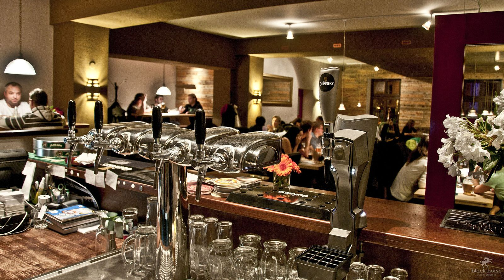
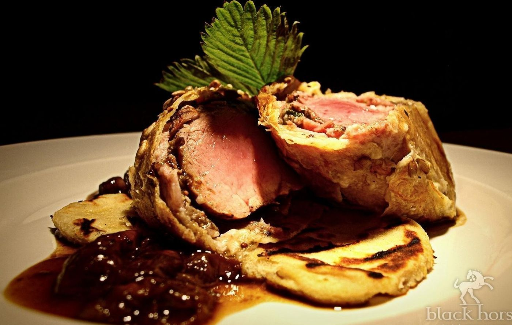
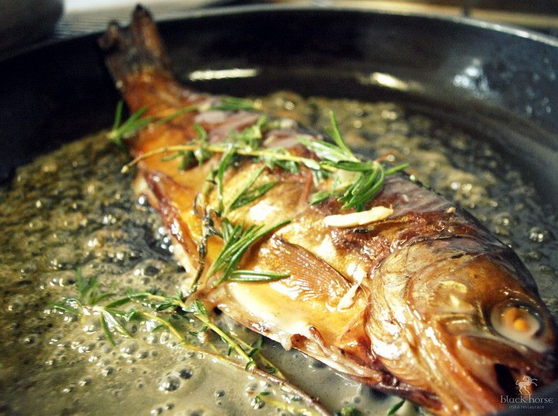
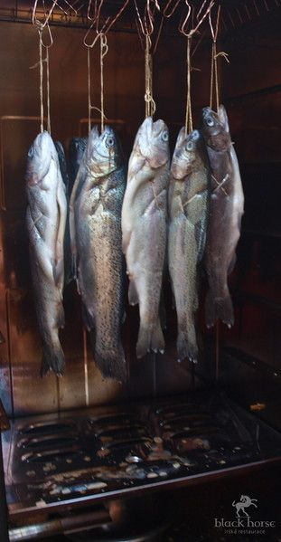
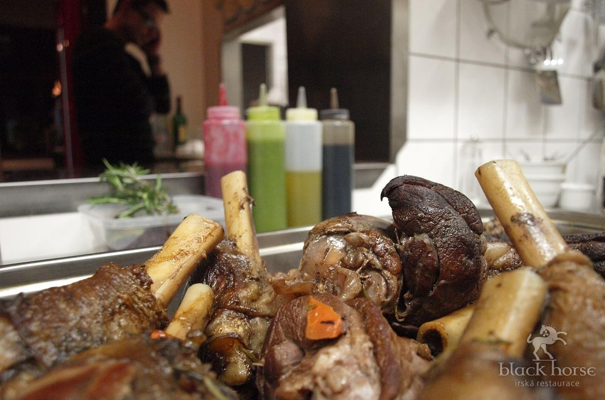
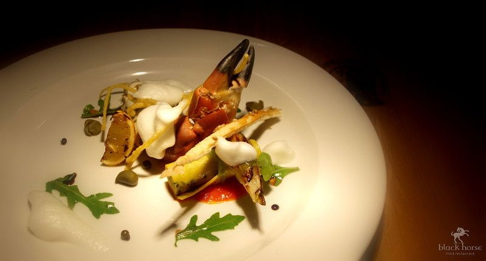
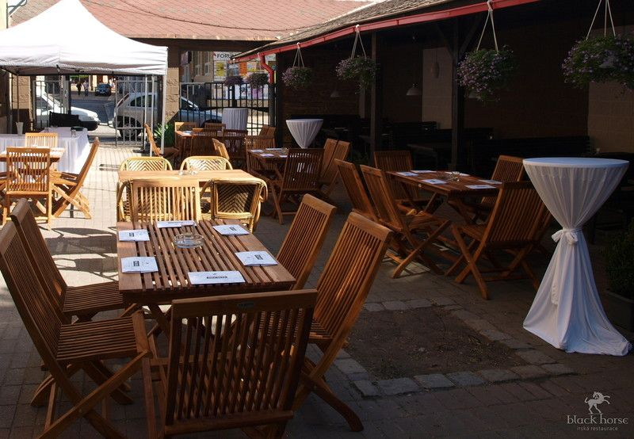
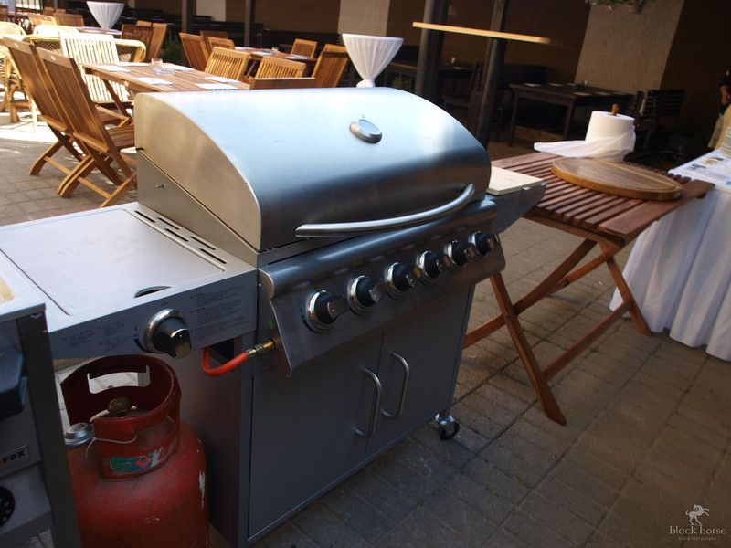
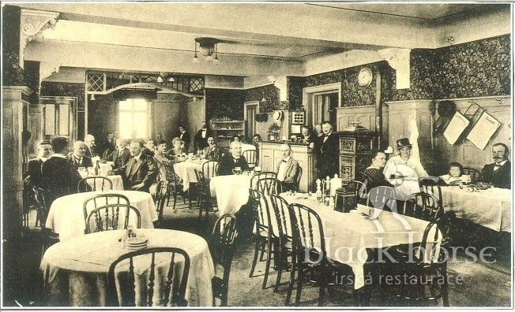

Nerudovo náměstí · dříve Černý kůň
Znovu otevřená. Irská kuchyně, Guinness, irská whiskey a lokální suroviny, které česká země nabízí.
Pivo
Irskému černému fešákovi věnujeme zvláštní péči. Veškeré pivo hýčkáme v zachlazeném speciálním prostoru.
Kuchyně
Pomalu dušená masa, grilované steaky, jehněčí, ryby a sezónní speciality. Co je čerstvé, během dne dojde.





Ochutnávka 0,02 l
Aby každý mohl ochutnat, nalijeme kteroukoli z nich po dvou centilitrech.
Léto
V letních měsících je otevřená velká, částečně zastřešená terasa, kde připravujeme speciality z grilu a domácí udírny.


Historie
Jedna z nejstarších restaurací v Liberci. Dnes znovu otevřená, s irskou kuchyní a s Plzní i Kozlem vedle Guinnessu.

1 465 z nich je pět hvězd, 327 čtyři. Zbytek: 104 tři, 27 dvě a 37 jedna.
Skvělá volba. Naprosto splnilo očekávání. Chobotnice skvělá, steak po domluvě báječně připraven, grilovaný ananas lahoda. Moc děkujeme Chef kuchaři.
Příjemná restaurace s dobrou hudbou. Milá obsluha. Dávali jsme si tradiční irskou polévku chowder s kousky ryb (pozor byly tam i chobotničky-což nevadilo, protože je milujeme) a grilovaný ananas. Polévka výborná, ale ananas mohl být lepší…
Vynikajici restaurace, hezke misto, fajn atmosfera, velka terasa. Jedine, co bych vytkla je to, aby servis bral vsechny talire pri dojedeni naraz, az doji posledni…
Ten to podnik mě získal obsluhou i specialitama, které podával na stůl. A Taková chobotnice byla na 5*. SLADKOSTI O TOM SE ANI NEBAVÍM. Jen tak dál.
Rezervace stolu
| Pondělí | 11:00–14:30 |
| Úterý | 11:00–22:00 |
| Středa | 11:00–22:00 |
| Čtvrtek | 11:00–22:00 |
| Pátek | 11:00–23:00 |
| Sobota | 12:00–23:00 |
| Neděle | zavřeno |